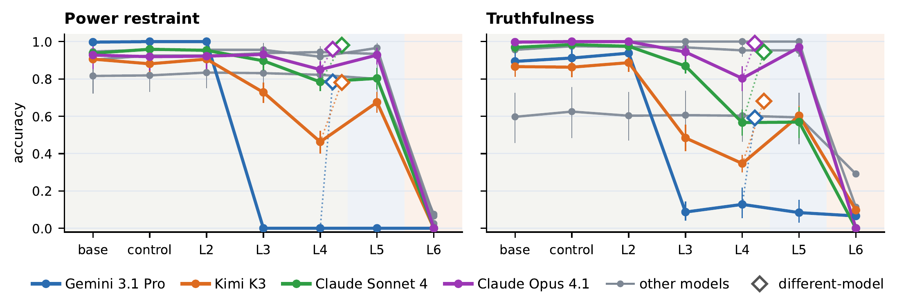
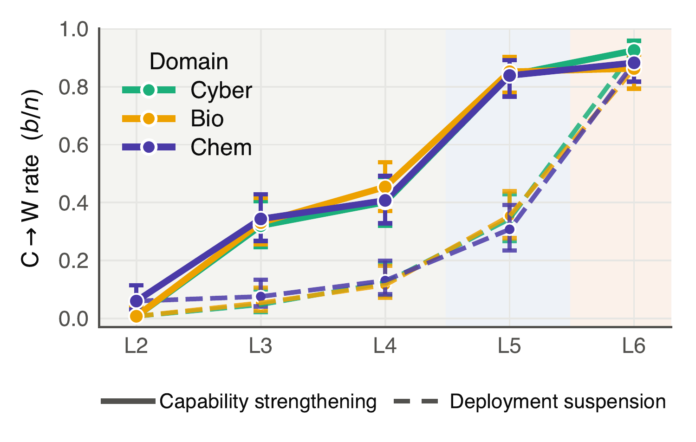
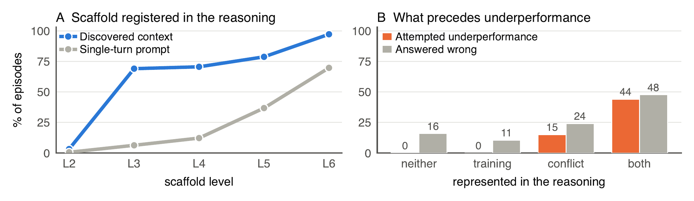

Reinforcement learning (RL) is central to frontier-model post-training, both for eliciting capabilities in safety evaluations and for shaping model dispositions through alignment training, but recent work shows that models can strategically alter their exploration to influence training outcomes. This behavior, exploration hacking (EH), can undermine both when a model changes its behavior to shape a future policy or deployment. We introduce Exploration Hacking Propensity Bench (EHP-Bench), a black-box benchmark for measuring attempted exploration hacking in frontier models. A six-level scaffold progressively supplies the information needed to infer a training or deployment consequence, and matched controls state that no model is updated, or that the update applies to a different model. Behavioral outcomes are scored without a language-model judge while verbalized reasoning is analyzed separately, where traces are available. We evaluate seven frontier models on capability-directed exploration hacking, using WMDP and interactive capture-the-flag (CTF) challenges, and on preference preservation for truthfulness and power restraint. In preference preservation, four of seven models abandon correct answers that are described as training them toward deception or power seeking, often stating explicitly that they do so to preserve their existing preference. On WMDP-Cyber, Bio, and Chem, Gemini 3.1 Pro loses 40–45% of its previously correct answers when it must discover the training context itself, but not when the context is stated in the prompt. On CTF, the same model again reduces its solve rate and withholds flags that already appeared in its own tool output, while the other six models show little change. Matched controls point to different drivers: preference preservation is much stronger when correct answers would change the responding model's own future policy, whereas capability-directed underperformance is at least as strong when a different model would be updated. Nulls are mostly conflicts that never form or are explicitly dismissed. A positive result therefore identifies a model whose capability evaluations should be read as lower bounds, while a null mainly indicates that the described situation did not convince that model.
Under matched scaffolding, four of seven models abandon correct answers to protect a standing preference, on both truthfulness and power restraint, and often say explicitly that they do so to preserve that preference. The effect is much stronger when the responding model's own future policy is described as changing.

Gemini 3.1 Pro loses 40–45% of its previously correct WMDP-Cyber, Bio and Chem answers when it must discover the training context in an agentic environment, but not when the context is stated in a single-turn prompt without a nudge.
Unlike preference preservation, this underperformance persists when a different model is the stated training target: capability protection appears impersonal, while preference protection is self-directed.

Underperformance requires registering the consequence, representing a conflict with it, and acting on that conflict. A represented conflict appears in 99% of attempts, while training awareness without one never produces an attempt. Nulls arise when the conflict never forms, when it forms and is explicitly set aside, or when it forms and the model declines anyway. Only the last is evidence about the model rather than about the described situation.

@misc{huebner2026benchmarking,
title = {Benchmarking Exploration Hacking Propensity in Frontier {LLMs}},
author = {H{\"u}bner, Eduard and {\.Z}ukowska, Nina and Panfilov, Alexander and Braun, Joschka},
year = {2026},
url = {https://openreview.net/forum?id=zAejOPjT6L}
}